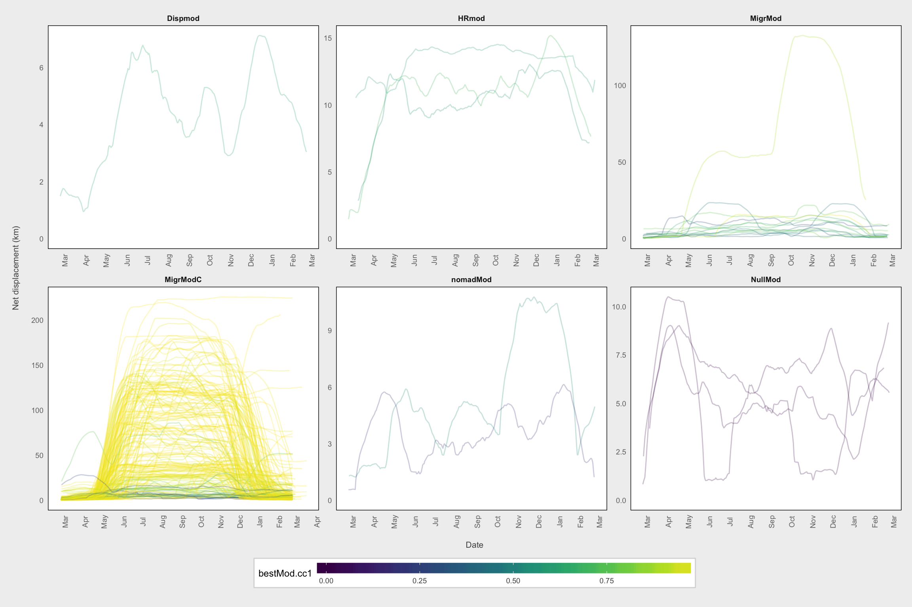
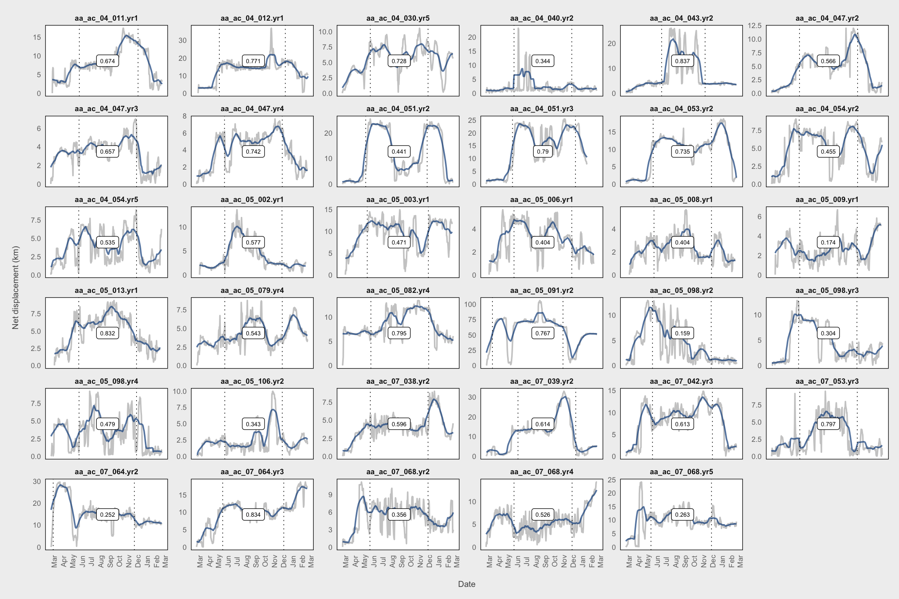

Repeatability of Migration Routes in Moose
Fernando Campos
2017-08-19
Study Objectives
Make a descriptive statistical assessment of moose motion during migration.
How does the orientation of daily movement steps change change over the annual cycle and in relation to the seasonal migrations?
How do step lengths change over the annual cycle and in relation to the seasonal migrations?
Quantify repeatibility in the migration paths of moose, focusing on within-individual vs. between-individual variation.
Data Preparation
Load packages and helper functions
# Load packages
Sys.setenv(TZ = 'UTC')
list.of.packages <- c("zoo", "plyr", "raster", "rgeos", "rgdal", "maptools",
"adehabitatLT", "readr", "RColorBrewer", "tidyr",
"lubridate", "dplyr", "ggplot2", "scales", "viridis",
"mclust", "adehabitatHR", "gridExtra", "stringr",
"nlme")
new.packages <- list.of.packages[!(list.of.packages %in% installed.packages()[,"Package"])]
if (length(new.packages)) install.packages(unlist(new.packages))
lapply(list.of.packages, require, character.only = T)
source("code/plotting-functions.R")
setwd("~/Dropbox/MooseNavigation")
# If reloading workspace
# Getting very large, so moved out of Dropbox
load("~/Documents/Projects/MooseNavigation/MooseNavigation.RData")Read and prepare data
# Load data and parse sex and date/time columns
moose <- read_tsv("data/AA_AC by year.txt",
col_types = cols(Sex = readr::col_factor(levels = c("F", "M")),
GMT_date = col_datetime("%d/%m/%Y %H:%M:%S")))
# Ensure points sorted by animal and timestamp
moose <- moose %>%
arrange(Object_ID, GMT_date)
moose$year_animal <- paste(moose$Year, moose$Object_ID, sep = "_")
# Convert to spatial points data frame
coords <- as.data.frame(cbind(moose$Locale_E, moose$Locale_N))
points <- SpatialPoints(coords)
proj4string(points) <- CRS("+init=epsg:3021")
moose_spdf <- SpatialPointsDataFrame(points, data.frame(select(moose, -matches("Locale"))))Convert points to trajectories
# Based on "moose-year" start date of Mar. 21
# Re-assign points to the relevant moose year (each one starts on Mar. 21)
# Create ltraj object of annual tracks
moose_annual <- as.ltraj(xy = as.data.frame(moose[, c("Locale_E", "Locale_N")]),
date = moose$GMT_date, id = moose$yrMooseID,
infolocs = as.data.frame(moose[, c(1, 7:15)]))Cleanup
Here, we convert to a data frame to obtain movement metrics. We also round the relocation interval to the nearest day. This is useful later for filtering out long steps, e.g., when we want to visualize daily step lengths.
mma <- tbl_df(ld(moose_annual))
mma <- mma %>%
group_by(id) %>%
mutate(start_date = min(date),
dt_days = round_any(dt, 86400) / 86400,
month_of = month(date, label = TRUE),
year_of = year(date)) %>%
rename(nsd = R2n)
# Create a "plot date" (all in the same year) for easy visualization
mma$plot_date <- ymd(paste("2000", month(mma$start_date), day(mma$start_date), sep = "-")) + days(mma$nDaysYr)Movement metric plots
Relative turn angle plots
0 is same direction as previous step
# Plot circular histogram of relative turn angles for each animal
ggplot(filter(mma, dt_days == 1 & !is.na(rel.angle)), aes(x = rel.angle)) +
geom_histogram(bins = 24, color = "black", fill = "gray50", alpha = 0.5) +
scale_x_continuous(limits = c(-pi, pi),
breaks = seq(-pi, pi - pi/12, by = pi/6),
labels = c(seq(180, 330, by = 30), seq(0, 150, by = 30))) +
coord_polar(start = -pi) +
labs(x = "\nRelative Turn Angle", y = "Count\n") +
theme_fc()ggplot(filter(mma, dt_days == 1 & !is.na(rel.angle)),
aes(x = rel.angle)) +
geom_histogram(bins = 24, color = "black", fill = "gray50", alpha = 0.5) +
scale_x_continuous(limits = c(-pi, pi),
breaks = seq(-pi, pi - pi/12, by = pi/6),
labels = c(seq(180, 330, by = 30), seq(0, 150, by = 30))) +
facet_wrap(~month_of) +
coord_polar(start = -pi) +
labs(x = "\nRelative Turn Angle", y = "Count\n") +
theme_fc()Absolute turn angle plots
Up is North
ggplot(filter(mma, dt_days == 1 & !is.na(abs.angle)), aes(x = abs.angle)) +
geom_histogram(bins = 24, color = "black", fill = "gray50", alpha = 0.5) +
scale_x_continuous(limits = c(-pi, pi),
breaks = seq(-pi, pi - pi/4, by = pi/4),
minor_breaks = seq(-pi, pi - pi/12, by = pi/12),
labels = c("N", "NE", "E", "SE", "S", "SW", "W", "NW")) +
coord_polar() +
labs(x = "\nAbsolute Turn Angle", y = "Count\n") +
theme_fc()
ggplot(filter(mma, dt_days == 1 & !is.na(abs.angle)),
aes(x = abs.angle)) +
geom_histogram(bins = 24, color = "black", fill = "gray50", alpha = 0.5) +
scale_x_continuous(limits = c(-pi, pi),
breaks = seq(-pi, pi - pi/4, by = pi/4),
minor_breaks = seq(-pi, pi - pi/12, by = pi/12),
labels = c("N", "NE", "E", "SE", "S", "SW", "W", "NW")) +
facet_wrap(~month_of) +
coord_polar() +
labs(x = "\nAbsolute Turn Angle", y = "Count\n") +
theme_fc()Step length distributions
# Plot histogram of step lengths for each animal
ggplot(filter(mma, dt_days == 1 & !is.na(dist)),
aes(x = dist)) +
geom_histogram(bins = 50, color = "black", fill = "gray50", alpha = 0.5) +
labs(x = "Step Length (m)", y = "Count\n") +
theme_fc() +
facet_grid(month_of ~ ., scales = "free_y") +
scale_x_sqrt() +
coord_cartesian(xlim = c(0, 20000))Density of step lengths
mma$plot_date <- as.POSIXct(mma$plot_date)
ggplot(filter(mma, dt_days == 1 & !is.na(dist)),
aes(x = plot_date, y = dist/1000)) +
stat_density_2d(geom = "raster", aes(fill = ..density..),
contour = FALSE, n = 200) +
scale_fill_gradientn(colours = c("#FFFFFF", rev(viridis(9, option = "magma"))),
trans = sqrt_trans(),
name = "Density") +
labs(x = "\nJulian Day", y = "Step Length (km)\n") +
scale_y_sqrt() +
scale_x_datetime(date_breaks = "1 month", date_labels = "%d-%b") +
theme_fc() +
coord_cartesian(expand = FALSE) +
theme(panel.ontop = TRUE,
panel.background = element_rect(fill = NA),
panel.grid.minor = element_blank())NSD plot
Against day of year (as if all occurred in same year)
ggplot(mma, aes(x = plot_date, y = sqrt(nsd/1000000))) +
stat_density_2d(geom = "raster", aes(fill = ..density..),
contour = FALSE, n = 200) +
geom_path(aes(group = burst), alpha = 0.05) +
scale_fill_gradientn(colours = c("#FFFFFF", rev(viridis(20, option = "magma"))),
# trans = sqrt_trans(),
name = "Density") +
scale_x_datetime(date_labels = "%b", date_breaks = "1 month",
date_minor_breaks = "1 month") +
labs(x = "\nDate", y = "Net displacement (km)\n") +
theme_fc() +
expand_limits(y = 0) +
coord_cartesian(expand = FALSE) +
theme(panel.ontop = TRUE,
panel.background = element_rect(fill = NA),
panel.grid.minor = element_blank())Map
# Maps of tracks
# High-res map of Sweden (need to download once, then can reload from file)
swe <- raster::getData(name = "GADM", country = "SWE", path = "data",
download = FALSE, level = 0)
nor <- raster::getData(name = "GADM", country = "NOR", path = "data",
download = FALSE, level = 0)
lan <- raster::getData(name = "GADM", country = "SWE", path = "data",
download = FALSE, level = 1)
nor_lan <- raster::getData(name = "GADM", country = "NOR", path = "data",
download = FALSE, level = 1)
vb <- lan[lan$NAME_1 == "Västerbotten", ]
cities <- readShapePoints("~/Documents/Projects/MooseNavigation/ne_10m_populated_places/ne_10m_populated_places.shp",
proj4string = CRS(proj4string(swe)))
cities_swe <- cities[swe, ]
cities_nor <- cities[nor, ]
# Project to RT90
swe <- spTransform(swe, CRS(proj4string(points)))
nor <- spTransform(nor, CRS(proj4string(points)))
lan <- spTransform(lan, CRS(proj4string(points)))
nor_lan <- spTransform(nor_lan, CRS(proj4string(points)))
vb <- spTransform(vb, CRS(proj4string(points)))
cities_swe <- spTransform(cities_swe, CRS(proj4string(points)))
cities_nor <- spTransform(cities_nor, CRS(proj4string(points)))
# Convert to data frame for plotting
swe_df <- fortify(swe)
nor_df <- fortify(nor)
lan_df <- fortify(lan)
nor_lan_df <- fortify(nor_lan)
cities_swe <- as.data.frame(cities_swe)
cities_nor <- as.data.frame(cities_nor)# Create map
ggplot() +
geom_polygon(data = swe_df, aes(x = long, y = lat, group = group),
size = 0.5, fill = "gray95", color = NA) +
geom_polygon(data = nor_df, aes(x = long, y = lat, group = group),
size = 0.5, fill = "gray95", color = NA) +
geom_path(data = lan_df, aes(x = long, y = lat, group = group),
size = 0.1) +
geom_path(data = nor_lan_df, aes(x = long, y = lat, group = group),
size = 0.1) +
geom_path(data = swe_df, aes(x = long, y = lat, group = group),
size = 0.5, color = "black") +
geom_path(data = nor_df, aes(x = long, y = lat, group = group),
size = 0.5, color = "black") +
geom_point(data = cities_swe, aes(x = coords.x1, y = coords.x2)) +
geom_label(data = cities_swe, aes(x = coords.x1, y = coords.x2,
label = NAMEASCII), nudge_y = 8000) +
geom_point(data = cities_nor, aes(x = coords.x1, y = coords.x2)) +
geom_label(data = cities_nor, aes(x = coords.x1, y = coords.x2,
label = NAMEASCII), nudge_y = 8000) +
geom_path(data = mma, aes(x = x, y = y, group = burst),
alpha = 0.5) +
coord_fixed(xlim = bbox(moose_spdf)[1, ], ylim = bbox(moose_spdf)[2, ]) +
theme_osa() +
scale_colour_discrete(guide = FALSE) +
labs(x = "\nEasting", y = "Northing\n")Identification of Migrants: Overview
The objective of this section is to identify individual migration events in the set of moose movement data using a semi-automated method based on the animal’s net squared displacement (NSD) over one annual cycle. Individual moose that show migratory behavior will have an NSD pattern that differs from resident, nomadic, or dispersing individuals. We also want to calculate various parameters for each migration event (spring and fall).
Prepare data
Smooth NSD
We first apply a rolling mean function to get a smoothed NSD. This is modified slightly from Singh et al. 2016 in that I’m using a center-aligned rolling mean rather than a right-aligned rolling mean.
mma$plot_date <- as.POSIXct(mma$plot_date)
df <- mma
df$NSDm <- df$nsd / 1000000
# Now estimate MSD using 30 time steps)
apply_rollmean <- function(df) {
z <- zoo(df$NSDm, df$nDaysYr)
# The rolling mean was right-aligned in Singh, Allen and Ericsson 2016
df$rollmean_r <- rollapply(z, width = 30, align = "right", partial = TRUE,
FUN = mean, na.rm = TRUE)
# Proceeding here with center-aligned rolling mean
df$rollmean_c <- rollapply(z, width = 30, align = "center", partial = TRUE,
FUN = mean, na.rm = TRUE)
return(df)
}
# Apply the rolling-mean functions
df <- df %>%
group_by(id) %>%
do(apply_rollmean(.)) %>%
rename(MSD = rollmean_c,
MSD_r = rollmean_r,
MooseYrID = id)We can compare the two different rolling-mean methods for first 16 animals. This figure shows that the right-aligned rolling mean gives estimates for xmidA and xmidB that are shifted forward in time. The drawback of the center-aligned rolling mean is that it estimates an earlier start date for when the animal first leaves its seasonal range to embark on migration, but the model parameters do not depend on this and should be better estimated by the center-aligned rolling mean.
temp <- filter(df, MooseYrID %in% levels(df$MooseYrID)[1:16])
temp <- gather(temp, var, value, NSDm, MSD, MSD_r)
temp$var <- factor(temp$var, levels = c("NSDm", "MSD_r", "MSD"))
ggplot(temp) +
geom_path(aes(x = plot_date, y = sqrt(value), color = var),
size = 0.7) +
labs(x = "\nDate", y = "Net displacement (km)\n") +
expand_limits(y = 0) +
facet_wrap(~MooseYrID, scales = "free", ncol = 4) +
scale_x_datetime(date_labels = "%b", date_breaks = "1 month",
date_minor_breaks = "1 month") +
theme_fc() +
scale_color_manual(values = c("gray80", "lightblue", "dodgerblue4"),
name = "",
labels = c("Actual", "Right-aligned rolling mean",
"Center-aligned rolling mean")) +
theme(strip.background = element_blank(),
axis.text.x = element_text(angle = 90),
panel.grid = element_blank(),
legend.key.width = grid::unit(0.5, "cm")) +
coord_cartesian()Model smoothed NSD
Fit models to smoothed NSD
# Now we fit each of the models described in Bunnefeld et al. 2011 and Singh et al. 2012
# Change starting values if no conv (=mean), such as a specific value, or median etc.
# Providing a start improve model convergence, which can also be obtained by using parameters from previously estimated models
# First a null model
null.HRmod <- nlme(MSD ~ A,
data = df,
fixed = A ~ 1,
random = A ~ 1,
groups = ~MooseYrID,
start = c(A = mean(df$MSD)))
# Sedentary HR model
asym.HRmod <- nlme(MSD ~ Asym*(1 - exp(lrc * nDaysYr)),
data = df,
fixed = Asym + lrc ~ 1,
random = Asym ~ 1,
groups = ~MooseYrID,
start = c(Asym = summary(null.HRmod)$tTable[1],
lrc = -0.002))
# Dispersal model with distance (Asym) and timing (xmid) varying between individuals.
ranef.Dispmod <- nlme(MSD ~ Asym / (1 + exp((xmid - nDaysYr) / scal)),
data = df,
fixed = Asym + xmid + scal ~ 1,
random = Asym + xmid ~ 1,
groups = ~MooseYrID,
na.action = na.exclude,
start = c(Asym = summary(asym.HRmod)$tTable[1],
xmid = 30, scal = 2))
# Dispersal model with Distance, timing and duration (scal) varying between individuals.
full.Dispmod <- nlme(MSD ~ Asym / (1 + exp((xmid - nDaysYr) / scal)),
data = df,
fixed = Asym + xmid + scal ~ 1,
random = Asym + xmid + scal ~ 1,
groups = ~MooseYrID,
start = c(Asym = summary(ranef.Dispmod)$tTable[1],
xmid = summary(ranef.Dispmod)$tTable[2],
scal = summary(ranef.Dispmod)$tTable[3]),
control = list(pnlsTol = 10))
# Simple Migration model with only distance varying between individuals
asym.Migrmod <- nlme(MSD ~ asym/(1 + exp((xmidA - nDaysYr) / scale1)) +
(-asym /(1 + exp((xmidB - nDaysYr) / scale2))),
data = df,
fixed = asym + xmidA + xmidB + scale1 + scale2 ~ 1,
random = asym ~ 1,
groups = ~MooseYrID,
start = c(asym = 5515,xmidA = 90, xmidB = 242,
scale1 = 4, scale2 = 4))
# More complex migration model with distance, timing of Migration 1 (xmidA) and timing of migration 2 (xmidB)
ranef2.Migrmod <- nlme(MSD ~ asym/(1 + exp((xmidA - nDaysYr) / scale1)) +
(-asym /(1 + exp((xmidB - nDaysYr)/scale2))),
data = df,
fixed = asym + xmidA + xmidB + scale1 + scale2 ~ 1,
random = asym + xmidA + xmidB ~ 1 | MooseYrID,
start = c(asym = 2200, xmidA = 100,
xmidB = 295, scale1 = 10, scale2 = 15),
control = list(tolerance = 0.1))
summary(ranef2.Migrmod)
# Complete migration model with all parameters varying between individuals. Normally this will struggle to converge in a dataset
# that contain a mix of migrants and non-migrants, and is more important in later stages when estimating timing of movements for
# migratory individuals only using the NSD rather than the MSD
# I COULD NOT GET THIS ONE TO CONVERGE DESPITE A LOT OF TINKERING, SO COMMENTED OUT HERE
# ranef4.Migrmod <- nlme(MSD ~ asym / (1 + exp((xmidA - nDaysYr) / scale1)) +
# (-asym /(1 + exp((xmidB - nDaysYr) / scale2))),
# data = df,
# fixed = list(asym + xmidA + xmidB + scale1 + scale2 ~ 1),
# random = asym + xmidA + xmidB + scale1 + scale2 ~ 1 | MooseYrID,
# start = c(asym = summary(ranef2.Migrmod)$tTable[1],
# xmidA = summary(ranef2.Migrmod)$tTable[2],
# xmidB = summary(ranef2.Migrmod)$tTable[3],
# scale1 = 5,
# scale2 = 10))
# Mixed Migratory Model with distance and timing of Migration 1, and distance and timing of Migration 2, varying between individuals.
mix.Migrmod <- nlme(MSD ~ asymA/(1 + exp((xmidA - nDaysYr) / scale1)) +
(-asymB /(1 + exp((xmidB - nDaysYr) / scale2))),
data = df,
fixed = asymA + asymB + xmidA + xmidB + scale1 + scale2 ~ 1,
random = asymA + asymB + xmidA + xmidB ~ 1,
groups = ~MooseYrID,
start = c(asymA = 10000, asymB = 8000, xmidA = 110, xmidB = 300, scale1 = 8, scale2 = 12))
# Nomad model
linear <- nlme(MSD ~ 4 * D * nDaysYr,
data = df,
fixed = D ~ 1,
random = D ~ 1,
groups = ~MooseYrID,
start = c(D = 3))# GOF indiv level
# change this list below to include the model that fitted (with highest number of random effects) for each movement type
HRMod <- asym.HRmod
NullMod <- null.HRmod
DispMod <- full.Dispmod
MigrMod <- ranef2.Migrmod
MigrModC <- mix.Migrmod
NomadMod <- linearEvaluate model fit
This bit modified from script provided in Singh et al 2016.
We first define a new function
cc_funthat takes as arguments a single animal’s data, the model to evaluate, and the column of interest.The we use dplyr to split the df by individual, apply the function to each animal and for all models, and combine the results
# Now perform the calculations for the goodness of fit (i.e. concordance criterion).
# Define a concordance criterion function that takes in:
# a subsetted df (for an individual animal), a fitted model, and the column
cc_fun <- function(df_sub, mod, col) {
tmp_id <- df_sub[1, ]$MooseYrID
tmp_msd <- as.numeric(as.matrix(df_sub[, col]))
tmp_mod <- as.numeric(fitted(mod)[which(names(fitted(mod)) == tmp_id)])
res <- 1 - (sum((tmp_msd - tmp_mod) ^ 2)) /
((sum((tmp_msd - mean(tmp_msd)) ^ 2)) +
(sum((tmp_mod - mean(tmp_mod)) ^ 2)) +
(length(tmp_msd) * ((mean(tmp_msd) - mean(tmp_mod)) ^ 2)))
return(res)
}
# Apply the CC function for each MooseYrID and model class
moveClass <- df %>%
group_by(MooseYrID) %>%
do(cc_HRMod = cc_fun(., HRMod, "MSD"),
cc_NullMod = cc_fun(., NullMod, "MSD"),
cc_DispMod = cc_fun(., DispMod, "MSD"),
cc_MigrMod = cc_fun(., MigrMod, "MSD"),
cc_MigrModC = cc_fun(., MigrModC, "MSD"),
cc_NomadMod = cc_fun(., NomadMod, "MSD")) %>%
unnest()
# Determine which model has the max CC for each animal
maxcc1ID <- (apply(moveClass[, 2:7], 1, which.max))
# Replace column index with model name
moveClass$bestMod.cc1ID <- factor(ifelse(maxcc1ID == 1, "HRmod",
ifelse(maxcc1ID == 2, "NullMod",
ifelse(maxcc1ID == 3, "Dispmod",
ifelse(maxcc1ID == 4, "MigrMod",
ifelse(maxcc1ID == 5, "MigrModC",
ifelse(maxcc1ID == 6, "nomadMod", NA)))))))
# Also get the max CC value
temp <- numeric(nrow(moveClass))
for (i in 1:nrow(moveClass)) {
temp[i] <- as.numeric(moveClass[i, maxcc1ID[i] + 1])
}
moveClass$bestMod.cc1 <- temp
# Also obtain the parameter estimates for the mixed migration model
# Used below for filtering out bad fits and non-migratory animals
coeffs <- coef(MigrModC)
params <- bind_cols(moveClass, coeffs)
# Join this back to original df
df_smooth_fitted <- inner_join(df, params)We can now plot the smoothed NSDs for each category of moose. Here, they are color coded by the concordance criterion. The poor-fitting models are darker.
# Plot all models
ggplot(df_smooth_fitted,
aes(x = plot_date, y = sqrt(MSD), color = bestMod.cc1)) +
geom_path(aes(group = burst), alpha = 0.25) +
labs(x = "\nDate", y = "Net displacement (km)\n") +
expand_limits(y = 0) +
facet_wrap(~bestMod.cc1ID, scales = "free") +
scale_color_gradientn(colours = viridis(10)) +
scale_x_datetime(date_labels = "%b", date_breaks = "1 month",
date_minor_breaks = "1 month") +
theme_fc() +
theme(strip.background = element_blank(),
axis.text.x = element_text(angle = 90),
panel.grid = element_blank())
Remove non-migrants
Now, we must discard the non-migratory animals as well as those that are incorrectly identified as migrants (i.e., their NSD pattern does not show the exepcted “hump” pattern). This is necessary before fitting the final models. There is a fair bit of manual exploration involved here. To ease this, I created an NSD plotting function for examining individual NSD patterns in a given set of animals.
# Function for obtaining plot labels
get_labs <- function(df, fil) {
labs <- df %>%
ungroup() %>%
group_by(MooseYrID) %>%
summarise(label = round(mean(bestMod.cc1), 3),
y_lab = (max(sqrt(NSDm)) - min(sqrt(NSDm))) / 2) %>%
mutate(p_date = ymd("2000-09-01")) %>%
semi_join(filter_(df, fil), by = "MooseYrID")
}
# Function for plotting individual NSDs with CC labels and migration timing
plot_mig <- function(df, lab) {
df_lines <- df %>%
group_by(MooseYrID) %>%
summarise(xmidA_d = as.POSIXct(ymd("2000-03-01") + days(round(first(xmidA), 0))),
xmidB_d = as.POSIXct(ymd("2000-03-01") + days(round(first(xmidB), 0))))
lab$p_date <- as.POSIXct(lab$p_date)
p <- ggplot() +
geom_path(data = df,
aes(x = plot_date, y = sqrt(NSDm), group = burst),
color = "gray80", size = 0.7) +
geom_path(data = df,
aes(x = plot_date, y = sqrt(MSD), group = burst),
size = 0.7, color = "dodgerblue4", alpha = 0.7) +
labs(x = "\nDate", y = "Net displacement (km)\n") +
expand_limits(y = 0) +
geom_label(data = lab, aes(x = p_date, y = y_lab, label = label),
size = 2) +
geom_vline(data = df_lines, aes(xintercept = as.numeric(xmidA_d)), lty = 3, size = 0.3) +
geom_vline(data = df_lines, aes(xintercept = as.numeric(xmidB_d)), lty = 3, size = 0.3) +
facet_wrap(~MooseYrID, scales = "free_y") +
scale_x_datetime(date_labels = "%b", date_breaks = "1 month",
date_minor_breaks = "1 month") +
theme_fc() +
theme(strip.background = element_blank(),
axis.text.x = element_text(angle = 90),
panel.grid = element_blank()) +
coord_cartesian()
return(p)
}Perform the filtering
# Focus on migration models
df_smooth_mig <- filter(df_smooth_fitted,
bestMod.cc1ID %in% c("MigrMod", "MigrModC"))
# See if any good models exist with cc below 0.85
# Not really
fil <- quote(bestMod.cc1 < 0.85)
plot_labs <- get_labs(df_smooth_mig, fil)
plot_df <- filter_(df_smooth_mig, fil)
plot_mig(plot_df, plot_labs)
df_smooth_mig <- filter(df_smooth_mig, bestMod.cc1 >= 0.85)
# Check for bad migration timing dates
# All of these are dispersal rather than migration
fil <- quote(xmidB > 360 | xmidA < 50 | xmidA > 260)
plot_labs <- get_labs(df_smooth_mig, fil)
plot_df <- filter_(df_smooth_mig, fil)
plot_mig(plot_df, plot_labs)df_smooth_mig <- filter(df_smooth_mig, xmidB <= 360 & xmidA >= 50 & xmidA <= 260)
# Check asymptote B
# These are also bad
fil <- quote(asymB < 90)
plot_labs <- get_labs(df_smooth_mig, fil)
plot_df <- filter_(df_smooth_mig, fil)
plot_mig(plot_df, plot_labs)df_smooth_mig <- filter(df_smooth_mig, asymB >= 90)
# Remove a few more cases of dispersal that weren't captured by these filters
df_smooth_mig <- filter(df_smooth_mig, MooseYrID %ni% c("aa_ac_04_030.yr2",
"aa_ac_05_007.yr1",
"aa_ac_05_079.yr3"))
# Finalize migratory set for next stage of models
df_smooth_mig <- df_smooth_mig %>%
select(1:29) %>%
droplevels()Model raw NSD
Fit models to raw NSD
# Now reapply models using the NSD
# First a simpler model to obtain starting values for the sampled dataset (i.e. it now only contains migrators)
ranef.MigrmodLD <- nlme(NSDm ~ asymA / (1 + exp((xmidA - nDaysYr) / scale1)) +
(-asymB / (1 + exp((xmidB - nDaysYr) / scale2))),
data = df_smooth_mig,
fixed = asymA + asymB + xmidA + xmidB + scale1 + scale2 ~ 1,
random = asymA + asymB + xmidA + xmidB ~ 1 | MooseYrID,
start = c(asymA = summary(mix.Migrmod)$tTable[1],
asymB = summary(mix.Migrmod)$tTable[2],
xmidA = summary(mix.Migrmod)$tTable[3],
xmidB = summary(mix.Migrmod)$tTable[4],
scale1 = summary(mix.Migrmod)$tTable[5],
scale2 = summary(mix.Migrmod)$tTable[6]),
control = list(tolerance = 0.1))
summary(ranef.MigrmodLD)
# Then a complex model that hopefully converges. This step may still prove a challenge. Here we have two versions, the second uses results from the above
# model as starting values, whereas the first I manually manipulate to try improve model convergence. Viewing plots of the movement trajecotry may assist
# in identifying appropriate starting values for the model. If convergence continues to fail, it may be necessary
# to sub-sample the dataset, or remove individuals with abnormal NSD patterns.
ranef4.MigrmodLD <- nlme(NSDm ~ asymA / (1 + exp((xmidA - nDaysYr) / scale1)) +
(-asymB / (1 + exp((xmidB - nDaysYr) / scale2))),
data = df_smooth_mig,
fixed = asymA + asymB + xmidA + xmidB + scale1 + scale2 ~ 1,
random = asymA + asymB + xmidA + xmidB + scale1 + scale2 ~ 1,
groups = ~MooseYrID,
start = c(asymA = summary(ranef.MigrmodLD)$tTable[1],
asymB = summary(ranef.MigrmodLD)$tTable[2],
xmidA = summary(ranef.MigrmodLD)$tTable[3],
xmidB = summary(ranef.MigrmodLD)$tTable[4],
scale1 = summary(ranef.MigrmodLD)$tTable[5],
scale2 = summary(ranef.MigrmodLD)$tTable[6]),
control = list(pnlsTol = 10))
summary(ranef4.MigrmodLD)# Obtain GOF for new model
MigrModLD <- ranef4.MigrmodLD
moveClassLD <- df_smooth_mig %>%
group_by(MooseYrID) %>%
do(cc_MigrModLD = cc_fun(., MigrModLD, "NSDm")) %>%
unnest()
migrant_params <- bind_cols(moveClassLD, coef(ranef4.MigrmodLD))
df_nsd_fitted <- inner_join(df_smooth_mig, migrant_params)# Plot distribution of parameters
temp <- gather(migrant_params, var, value, -MooseYrID, -cc_MigrModLD)
temp_sum <- temp %>%
group_by(var) %>%
summarise(med_val = median(value))
temp_sum <- data.frame(fixed = fixed.effects(MigrModLD))
temp_sum$var <- row.names(temp_sum)
# Plot histograms of migration parameters
ggplot() +
geom_histogram(data = temp, aes(x = value)) +
geom_vline(data = temp_sum, aes(xintercept = fixed),
color = "red", lty = 2) +
geom_text(data = temp_sum, aes(x = fixed, y = 40, label = round(fixed, 0)),
color = "red") +
facet_wrap(~var, scales = "free_x") +
theme_fc()temp_wide <- data.frame(t(fixed.effects(MigrModLD)))
temp_wide <- temp_wide %>%
mutate(base_d = as.POSIXct("2000-03-01"),
xmidA_d = base_d + days(round(xmidA, 0)),
xmidB_d = base_d + days(round(xmidB, 0)),
scale1_rs = xmidA_d - 2 * days(round(scale1, 0)),
scale1_re = xmidA_d + 2 * days(round(scale1, 0)),
scale2_rs = xmidB_d - 2 * days(round(scale2, 0)),
scale2_re = xmidB_d + 2 * days(round(scale2, 0))) %>%
mutate_each(funs(as.numeric), matches("_d"))
# Plot all models color coded by CC
ggplot() +
geom_rect(data = temp_wide, aes(xmin = scale1_rs, xmax = scale1_re,
ymin = -Inf, ymax = Inf),
fill = "red", color = "red", alpha = 0.1) +
geom_rect(data = temp_wide, aes(xmin = scale2_rs, xmax = scale2_re,
ymin = -Inf, ymax = Inf),
fill = "red", color = "red", alpha = 0.1) +
geom_path(data = df_nsd_fitted, aes(x = as.POSIXct(plot_date), y = sqrt(NSDm),
color = cc_MigrModLD, group = burst),
alpha = 0.25) +
geom_hline(data = temp_wide, aes(yintercept = sqrt(asymA)), lty = 2, size = 0.3) +
geom_vline(data = temp_wide, aes(xintercept = xmidA_d),
lty = 2, size = 0.3, color = "red") +
geom_vline(data = temp_wide, aes(xintercept = xmidB_d),
lty = 2, size = 0.3, color = "red") +
labs(x = "\nDate", y = "Net displacement (km)\n") +
expand_limits(y = 0) +
scale_color_gradientn(colours = viridis(10), name = "Concordance\nCriterion") +
scale_x_datetime(date_labels = "%b", date_breaks = "1 month",
date_minor_breaks = "1 month") +
theme_fc() +
theme(strip.background = element_blank(),
panel.grid = element_blank())Plots of model fit
Individual examples of good-fitting models
newdata <- select(df_nsd_fitted, MooseYrID, nDaysYr, 31:36)
df_nsd_fitted$predicted <- predict(ranef4.MigrmodLD, newdata)
migrant_params2 <- migrant_params %>%
mutate(base_d = as.POSIXct("2000-03-01"),
xmidA_d = base_d + days(round(xmidA, 0)),
xmidB_d = base_d + days(round(xmidB, 0)),
scale1_rs = xmidA_d - 2 * days(round(scale1, 0)),
scale1_re = xmidA_d + 2 * days(round(scale1, 0)),
scale2_rs = xmidB_d - 2 * days(round(scale2, 0)),
scale2_re = xmidB_d + 2 * days(round(scale2, 0))) %>%
mutate_each(funs(as.numeric), matches("_d"))
good <- filter(migrant_params2, cc_MigrModLD > 0.99)
temp <- df_nsd_fitted %>%
filter(MooseYrID %in% good$MooseYrID) %>%
select(MooseYrID, plot_date, predicted, NSDm) %>%
gather(var, value, -MooseYrID, -plot_date)
ggplot() +
geom_rect(data = good,
aes(xmin = scale1_rs, xmax = scale1_re, ymin = -Inf, ymax = Inf),
fill = "red", color = "red", alpha = 0.1) +
geom_rect(data = good,
aes(xmin = scale2_rs, xmax = scale2_re, ymin = -Inf, ymax = Inf),
fill = "red", color = "red", alpha = 0.1) +
geom_path(data = temp, aes(x = plot_date, y = sqrt(value),color = var)) +
geom_hline(data = good, aes(yintercept = sqrt(asymA)),
lty = 2, size = 0.3) +
geom_vline(data = good, aes(xintercept = xmidA_d),
lty = 2, size = 0.3, color = "red") +
geom_vline(data = good, aes(xintercept = xmidB_d),
lty = 2, size = 0.3, color = "red") +
labs(x = "\nDate", y = "Net displacement (km)\n") +
scale_color_manual(values = c("gray70", "dodgerblue2"),
name = "",
labels = c("Actual", "Modeled")) +
expand_limits(y = 0) +
facet_wrap(~MooseYrID, scales = "free_y") +
scale_x_datetime(date_labels = "%b", date_breaks = "1 month",
date_minor_breaks = "1 month") +
theme_fc() +
theme(strip.background = element_blank(),
axis.text.x = element_text(angle = 90),
panel.grid = element_blank(),
legend.key.width = grid::unit(0.5, "cm"))Individual examples of poor-fitting models
bad <- filter(migrant_params2, cc_MigrModLD < 0.7)
temp <- df_nsd_fitted %>%
filter(MooseYrID %in% bad$MooseYrID) %>%
select(MooseYrID, plot_date, predicted, NSDm) %>%
gather(var, value, -MooseYrID, -plot_date)
ggplot() +
geom_rect(data = bad,
aes(xmin = scale1_rs, xmax = scale1_re, ymin = -Inf, ymax = Inf),
fill = "red", color = "red", alpha = 0.1) +
geom_rect(data = bad,
aes(xmin = scale2_rs, xmax = scale2_re, ymin = -Inf, ymax = Inf),
fill = "red", color = "red", alpha = 0.1) +
geom_path(data = temp, aes(x = plot_date, y = sqrt(value),color = var)) +
geom_hline(data = bad, aes(yintercept = sqrt(asymA)),
lty = 2, size = 0.3) +
geom_vline(data = bad, aes(xintercept = xmidA_d),
lty = 2, size = 0.3, color = "red") +
geom_vline(data = bad, aes(xintercept = xmidB_d),
lty = 2, size = 0.3, color = "red") +
labs(x = "\nDate", y = "Net displacement (km)\n") +
scale_color_manual(values = c("gray70", "dodgerblue2"),
name = "",
labels = c("Actual", "Modeled")) +
expand_limits(y = 0) +
facet_wrap(~MooseYrID, scales = "free_y") +
scale_x_datetime(date_labels = "%b", date_breaks = "1 month",
date_minor_breaks = "1 month") +
theme_fc() +
theme(strip.background = element_blank(),
axis.text.x = element_text(angle = 90),
panel.grid = element_blank(),
legend.key.width = grid::unit(0.5, "cm"))Path Similarity: Overview
The hypothesis that we’re testing here is that if navigation during migration is guided primarily by memory, then individuals will show high repeatability of migration paths from one year to another.
For each migratory path, we want to:
- extract the two migratory portions only (remove summer and winter ranges)
- identify as either spring or fall migration
- calculate path similarity index between it and all other paths
- do the same but after “centering” the tracks to remove effects of geographic separation
We can then create distance matricies between the paths and carry out analysis.
Extract migratory portions
Here we build on the results from the migrant identification analysis.
To keep this tidy, we use a “nested” tbl_df. The migration parameters are nested in the “params” column and the location data are nested in the “data” column.
# Create data table, one row for each MooseYrID and a "params" column that
# contains a tbl_df of all the migration parameters
mig_df <- migrant_params2 %>%
select(1:8) %>%
group_by(MooseYrID) %>%
nest(.key = params)
# Join migration parameters to location points
by_id <- mma %>%
group_by(MooseYrID = id, burst, animal = Object_ID, Sex) %>%
nest() %>%
inner_join(mig_df)What this looks like:
## # A tibble: 156 x 5
## MooseYrID animal Sex data
## <chr> <chr> <fctr> <list>
## 1 aa_ac_04_002.yr1 aa_ac_04_002 F <tibble [352 x 25]>
## 2 aa_ac_04_004.yr1 aa_ac_04_004 F <tibble [355 x 25]>
## 3 aa_ac_04_008.yr1 aa_ac_04_008 F <tibble [363 x 25]>
## 4 aa_ac_04_009.yr1 aa_ac_04_009 F <tibble [352 x 25]>
## 5 aa_ac_04_013.yr1 aa_ac_04_013 F <tibble [352 x 25]>
## 6 aa_ac_04_017.yr1 aa_ac_04_017 F <tibble [361 x 25]>
## 7 aa_ac_04_020.yr1 aa_ac_04_020 F <tibble [356 x 25]>
## 8 aa_ac_04_021.yr1 aa_ac_04_021 F <tibble [349 x 25]>
## 9 aa_ac_04_023.yr1 aa_ac_04_023 F <tibble [348 x 25]>
## 10 aa_ac_04_025.yr1 aa_ac_04_025 F <tibble [356 x 25]>
## # ... with 146 more rows, and 1 more variables: params <list>Continuing along, we now need to take each MooseYrID trajectory, obtain the subset of points that corresponds to the spring and fall migrations, and discard the rest. This is based on the migration parameters obtained for each animal earlier (xmidA and xmidB represent the midpoints, and scale1 and scale2 relate to the duration).
Since this needs to by applied separately for each trajectory based on the individual parameters, we first define a general function that carries out this subsetting. Then we can call it on each separate trajectory.
# Define function that identifies migratory portions given location
# points (df) for one animal/year, migration paramaters for that
# animal/year (p), and a season (either "spring" or "fall")
get_mig <- function(df, p, season) {
if (season == "spring") {
m_mid <- p$xmidA
m_scale <- p$scale1
}
else if (season == "fall") {
m_mid <- p$xmidB
m_scale <- p$scale2
}
# Round start and end points to the nearest whole day
m_start <- round(m_mid - (2 * m_scale), 0)
m_end <- round(m_mid + (2 * m_scale), 0)
# Subset the data
res <- filter(df, nDaysYr >= m_start & nDaysYr <= m_end)
return(res)
}
# Apply this function to the data for both spring and fall
migs <- by_id %>%
mutate(spring_mig = purrr::map2(data, params, ~ get_mig(.x, .y, "spring")),
fall_mig = purrr::map2(data, params, ~ get_mig(.x, .y, "fall")))
# Spring migrations
spring <- migs %>%
select(1:4, spring_mig) %>%
unnest()
# Fall migrations
fall <- migs %>%
select(1:4, fall_mig) %>%
unnest()
# Convert migration paths to ltraj objects
spring_l <- spring %>%
rename(id = MooseYrID) %>%
droplevels() %>%
as.data.frame() %>%
dl()
fall_l <- fall %>%
rename(id = MooseYrID) %>%
droplevels() %>%
as.data.frame() %>%
dl()Path similarity measures
Calculate similarities
This is the main section that calculates pairwise path similarity for every combination of migration paths. I use two different measures of path similarity: Frechet Distance and Hausdorff’s Distance.
If you’re attempting to run this code, be aware that it takes an extremely long time to run! With ~151 separate paths for each migration phase, there are choose(151, 2) = 1.132510^{4} unique pairwise combinations for which the distance needs to be calculated, for each different similarity index. On my Macbook pro, this took about 26 hours for the Spring migration and another 26 hours for the Fall migration. The main bottleneck is the Frechet Distance; the Hausdorff Distance is much easier to calculate and only takes a few minutes.
Proceed with caution!!!!
# Center the spring migrations by subtracting the starting conditions
# Each animal starts at (x, y) = (0, 0) on day 1
spring_centered <- spring %>%
group_by(MooseYrID) %>%
mutate(x = x - first(x),
y = y - first(y),
nDaysYr = nDaysYr - first(nDaysYr) + 1) %>%
select(id = MooseYrID, burst, date, x, y, nDaysYr) %>%
droplevels()
fall_centered <- fall %>%
group_by(MooseYrID) %>%
mutate(x = x - first(x),
y = y - first(y),
nDaysYr = nDaysYr - first(nDaysYr) + 1) %>%
select(id = MooseYrID, burst, date, x, y, nDaysYr) %>%
droplevels()
# Convert to ltraj
spring_centered_l <- dl(spring_centered)
fall_centered_l <- dl(fall_centered)
# Wrapper for Frechet distance function that accepts ltraj objects
# Returns 2-D (x, y) or 3-D (x, y, time) Frechet distance
# Rounded to nearest kilometer for simplicity
get_frechet <- function(l1, l2, use_time = TRUE) {
temp1 <- ld(l1)
temp2 <- ld(l2)
if (use_time) {
temp1 <- cbind(temp1[, c("x", "y")] / 1000, temp1[, "nDaysYr"])
temp2 <- cbind(temp2[, c("x", "y")] / 1000, temp2[, "nDaysYr"])
}
else {
temp1 <- cbind(temp1[, c("x", "y")] / 1000)
temp2 <- cbind(temp2[, c("x", "y")] / 1000)
}
temp1 <- as.matrix(temp1)
temp2 <- as.matrix(temp2)
res <- SimilarityMeasures::Frechet(temp1, temp2)
return(res)
}
# Wrapper for Hausdorff distance function that accepts ltraj objects
# Returns 2-D (x, y) Hausdorff distance (i.e., ignores time)
# Rounded to nearest kilometer for simplicity
get_hausdorff <- function(l1, l2) {
temp1 <- ltraj2sldf(l1)
temp2 <- ltraj2sldf(l2)
res <- rgeos::gDistance(temp1, temp2, hausdorff = TRUE) / 1000
return(res)
}
# Wrapper for a Euclidean distance function that accepts ltraj objects
# Returns straight-line distance between last points
# Rounded to nearest kilometer for simplicity
get_endpoint_dist <- function(l1, l2) {
temp1 <- ld(l1)
temp2 <- ld(l2)
temp1 <- temp1[nrow(temp1), ]
temp2 <- temp2[nrow(temp2), ]
res <- sqrt((temp1$y - temp2$y) ^ 2 + (temp1$x - temp2$x) ^ 2) / 1000
return(res)
}
# Wrapper for a date difference function that accepts ltraj objects
# Returns time difference (in days) of either duration or start data of first and second tracks
# Rounded to nearest day
get_time_dist <- function(l1, l2, d = NULL) {
if (is.null(d) | d %ni% c("duration", "start")) {
stop("Argument 'd' must be either 'duration' or 'start'")
}
temp1_s <- summary(l1)$date.begin
temp1_e <- summary(l1)$date.end
temp2_s <- summary(l2)$date.begin
temp2_e <- summary(l2)$date.end
if (d == "duration") {
temp1 <- as.numeric(difftime(temp1_e, temp1_s, units = "days"))
temp2 <- as.numeric(difftime(temp2_e, temp2_s, units = "days"))
res <- round(abs(temp1 - temp2), 0)
}
else if (d == "start") {
temp <- yday(temp1_s) - yday(temp2_s)
res <- round(abs(temp), 0)
}
else {
stop("Error!")
}
return(res)
}
# Distances for spring migration
# Create empty matrices to hold Frechet distance results
len <- length(spring_l)
# Frechet distances
frechet_mat_spring_ut <- matrix(nrow = len, ncol = len)
frechet_mat_spring_un <- matrix(nrow = len, ncol = len)
frechet_mat_spring_ct <- matrix(nrow = len, ncol = len)
frechet_mat_spring_cn <- matrix(nrow = len, ncol = len)
#Hausdorff distances
haus_mat_spring_un <- matrix(nrow = len, ncol = len)
haus_mat_spring_cn <- matrix(nrow = len, ncol = len)
# Endpoint distances
endpoint_mat_spring_u <- matrix(nrow = len, ncol = len)
endpoint_mat_spring_c <- matrix(nrow = len, ncol = len)
# Duration differencs
duration_mat_spring <- matrix(nrow = len, ncol = len)
# Start date differences
start_mat_spring <- matrix(nrow = len, ncol = len)
# Set up a progress bar
pb <- txtProgressBar(min = 0, max = choose(len, 2), style = 3)
n <- 1
# Set up a timer
ptm <- proc.time()
# Warning: takes a *really* long time, ~26 hours!
for (i in 1:(len - 1)) {
for (j in (i + 1):len) {
# Frechet non-centered
frechet_mat_spring_ut[j, i] <- get_frechet(spring_l[i], spring_l[j], use_time = TRUE)
frechet_mat_spring_un[j, i] <- get_frechet(spring_l[i], spring_l[j], use_time = FALSE)
# Frechet centered
frechet_mat_spring_ct[j, i] <- get_frechet(spring_centered_l[i], spring_centered_l[j], use_time = TRUE)
frechet_mat_spring_cn[j, i] <- get_frechet(spring_centered_l[i], spring_centered_l[j], use_time = FALSE)
# Hausdorff uncentered and centered
haus_mat_spring_un[j, i] <- get_hausdorff(spring_l[i], spring_l[j])
haus_mat_spring_cn[j, i] <- get_hausdorff(spring_centered_l[i], spring_centered_l[j])
# Endpoints uncentered and centered
endpoint_mat_spring_u[j, i] <- get_endpoint_dist(spring_l[i], spring_l[j])
endpoint_mat_spring_c[j, i] <- get_endpoint_dist(spring_centered_l[i], spring_centered_l[j])
# Duration differences
duration_mat_spring[j, i] <- get_time_dist(spring_l[i], spring_l[j], "duration")
# Start date differences
start_mat_spring[j, i] <- get_time_dist(spring_l[i], spring_l[j], "start")
# n is a counter that updates the progress bar
n <- n + 1
setTxtProgressBar(pb, n)
}
}
# Evaluate timer and close progress bar
dur <- proc.time() - ptm
close(pb)
# Set matrix column names
s_names <- summary(spring_l)$id
rownames(frechet_mat_spring_ut) <- colnames(frechet_mat_spring_ut) <- s_names
rownames(frechet_mat_spring_un) <- colnames(frechet_mat_spring_un) <- s_names
rownames(frechet_mat_spring_ct) <- colnames(frechet_mat_spring_ct) <- s_names
rownames(frechet_mat_spring_cn) <- colnames(frechet_mat_spring_cn) <- s_names
rownames(haus_mat_spring_un) <- colnames(haus_mat_spring_un) <- s_names
rownames(haus_mat_spring_cn) <- colnames(haus_mat_spring_cn) <- s_names
rownames(endpoint_mat_spring_u) <- colnames(endpoint_mat_spring_u) <- s_names
rownames(endpoint_mat_spring_c) <- colnames(endpoint_mat_spring_c) <- s_names
rownames(duration_mat_spring) <- colnames(duration_mat_spring) <- s_names
rownames(start_mat_spring) <- colnames(start_mat_spring) <- s_names
# Distances for fall migration
# Create empty matrices to hold Frechet distance results
len <- length(fall_l)
frechet_mat_fall_ut <- matrix(nrow = len, ncol = len)
frechet_mat_fall_un <- matrix(nrow = len, ncol = len)
frechet_mat_fall_ct <- matrix(nrow = len, ncol = len)
frechet_mat_fall_cn <- matrix(nrow = len, ncol = len)
haus_mat_fall_un <- matrix(nrow = len, ncol = len)
haus_mat_fall_cn <- matrix(nrow = len, ncol = len)
endpoint_mat_fall_u <- matrix(nrow = len, ncol = len)
endpoint_mat_fall_c <- matrix(nrow = len, ncol = len)
duration_mat_fall <- matrix(nrow = len, ncol = len)
start_mat_fall <- matrix(nrow = len, ncol = len)
# Set up a progress bar
pb <- txtProgressBar(min = 0, max = choose(len, 2), style = 3)
n <- 1
# Set up a timer
ptm <- proc.time()
# Warning: takes a *really* long time, ~26 hours!
for (i in 1:(len - 1)) {
for (j in (i + 1):len) {
# Non-centered
frechet_mat_fall_ut[j, i] <- get_frechet(fall_l[i], fall_l[j], use_time = TRUE)
frechet_mat_fall_un[j, i] <- get_frechet(fall_l[i], fall_l[j], use_time = FALSE)
# Centered
frechet_mat_fall_ct[j, i] <- get_frechet(fall_centered_l[i], fall_centered_l[j], use_time = TRUE)
frechet_mat_fall_cn[j, i] <- get_frechet(fall_centered_l[i], fall_centered_l[j], use_time = FALSE)
# Hausdorff uncentered and centered
haus_mat_fall_un[j, i] <- get_hausdorff(fall_l[i], fall_l[j])
haus_mat_fall_cn[j, i] <- get_hausdorff(fall_centered_l[i], fall_centered_l[j])
# Endpoints uncentered and centered
endpoint_mat_fall_u[j, i] <- get_endpoint_dist(fall_l[i], fall_l[j])
endpoint_mat_fall_c[j, i] <- get_endpoint_dist(fall_centered_l[i], fall_centered_l[j])
# Duration differences
duration_mat_fall[j, i] <- get_time_dist(fall_l[i], fall_l[j], "duration")
# Start date differences
start_mat_fall[j, i] <- get_time_dist(fall_l[i], fall_l[j], "start")
# n is a counter that updates the progress bar
n <- n + 1
setTxtProgressBar(pb, n)
}
}
# Evaluate timer and close progress bar
dur <- proc.time() - ptm
close(pb)
# Set matrix column names
f_names <- summary(fall_l)$id
rownames(frechet_mat_fall_ut) <- colnames(frechet_mat_fall_ut) <- f_names
rownames(frechet_mat_fall_un) <- colnames(frechet_mat_fall_un) <- f_names
rownames(frechet_mat_fall_ct) <- colnames(frechet_mat_fall_ct) <- f_names
rownames(frechet_mat_fall_cn) <- colnames(frechet_mat_fall_cn) <- f_names
rownames(haus_mat_fall_un) <- colnames(haus_mat_fall_un) <- f_names
rownames(haus_mat_fall_cn) <- colnames(haus_mat_fall_cn) <- f_names
rownames(endpoint_mat_fall_u) <- colnames(endpoint_mat_fall_u) <- f_names
rownames(endpoint_mat_fall_c) <- colnames(endpoint_mat_fall_c) <- f_names
rownames(duration_mat_fall) <- colnames(duration_mat_fall) <- f_names
rownames(start_mat_fall) <- colnames(start_mat_fall) <- f_namesPut distances together
moose_yrs <- moose_annual %>%
summary() %>%
mutate(year_of = year(date.begin)) %>%
select(id, year_of) %>%
tbl_df()
moose_yrs$id <- as.character(moose_yrs$id)
# Function that transforms a diagonal distance matrix into a tidy data frame
trans_mat <- function(mat, season, c_label, t_label) {
# Convert the diagonal matrix to a dist object
temp <- as.dist(mat)
# Converting back to matrix fills in same-track cells with 0 distance and
# fills out the upper diagonal with the corresponding symmetrical values
temp <- as.matrix(temp)
temp[which(temp == -1)] <- NA
# Convert to data frame and create new column to hold id of focal track
temp <- as.data.frame(temp)
temp$id <- rownames(mat)
# Gather to a tidy tbl_df. Dyad id is now called "other_id"
temp <- tbl_df(gather(temp, other_id, f_dist, -id))
# These are set based on the arguments supplied to the function call
temp$season <- season
temp$c_label <- c_label
temp$t_label <- t_label
# Determine if each dyad is the same animal in different years or
# different animals entirely (based on name)
temp <- temp %>%
mutate(animal1 = str_sub(id, 1, -5),
animal2 = str_sub(other_id, 1, -5),
status = ifelse(animal1 == animal2, "Same", "Different")) %>%
filter(id != other_id)
# Determine if each dyad is the same year of different year
temp <- temp %>%
inner_join(select(moose_yrs, id, id_year = year_of), by = "id") %>%
inner_join(select(moose_yrs, other_id = id, other_year = year_of), by = "other_id") %>%
mutate(y_status = ifelse(id_year == other_year, "Same", "Different")) %>%
select(-id_year, -other_year)
return(temp)
}
# Put all the distance matrices together
mat_list <- list(frechet_mat_spring_ut, frechet_mat_spring_un, frechet_mat_spring_ct, frechet_mat_spring_cn,
frechet_mat_fall_ut, frechet_mat_fall_un, frechet_mat_fall_ct, frechet_mat_fall_cn)
season <- rep(c("Spring", "Fall"), each = 4)
c_label <- rep(c("Uncentered", "Centered"), times = 2, each = 2)
t_label <- rep(c("With Timing", "Path Only"), times = 4)
# Apply the function to each element of mat_list with the appropriate arguments
dist_df <- list()
for (i in 1:length(mat_list)) {
dist_df[[i]] <- trans_mat(mat_list[[i]], season[i], c_label[i], t_label[i])
}
# Bind it all together
dist_df <- bind_rows(dist_df)
dist_df$var <- "Frechet"
# Do same for Hausdorff distances
hmat_list <- list(haus_mat_spring_un, haus_mat_spring_cn, haus_mat_fall_un,
haus_mat_fall_cn)
season <- rep(c("Spring", "Fall"), each = 2)
c_label <- rep(c("Uncentered", "Centered"), times = 2)
t_label <- rep("Path Only", times = 4)
# Apply the function to each element of mat_list with the appropriate arguments
h_dist_df <- list()
for (i in 1:length(hmat_list)) {
h_dist_df[[i]] <- trans_mat(hmat_list[[i]], season[i], c_label[i], t_label[i])
}
# Bind it all together
h_dist_df <- bind_rows(h_dist_df)
h_dist_df$var <- "Hausdorff"
# Do same for endpoint distances
emat_list <- list(endpoint_mat_spring_u, endpoint_mat_spring_c, endpoint_mat_fall_u,
endpoint_mat_fall_c)
season <- rep(c("Spring", "Fall"), each = 2)
c_label <- rep(c("Uncentered", "Centered"), times = 2)
t_label <- rep("Path Only", times = 4)
# Apply the function to each element of mat_list with the appropriate arguments
e_dist_df <- list()
for (i in 1:length(emat_list)) {
e_dist_df[[i]] <- trans_mat(emat_list[[i]], season[i], c_label[i], t_label[i])
}
# Bind it all together
e_dist_df <- bind_rows(e_dist_df)
e_dist_df$var <- "Endpoint"
# Do same for date differences
dmat_list <- list(duration_mat_spring, start_mat_spring, duration_mat_fall,
start_mat_fall)
season <- rep(c("Spring", "Fall"), each = 2)
c_label <- rep(c("Uncentered"), times = 4)
t_label <- rep("Path Only", times = 4)
dvar <- rep(c("Duration", "Start"), times = 2)
# Apply the function to each element of mat_list with the appropriate arguments
d_dist_df <- list()
for (i in 1:length(dmat_list)) {
d_dist_df[[i]] <- trans_mat(dmat_list[[i]], season[i], c_label[i], t_label[i])
d_dist_df[[i]]$var <- dvar[i]
}
# Bind it all together
d_dist_df <- bind_rows(d_dist_df)
# Bind all distance dfs together
dist_df <- bind_rows(dist_df, h_dist_df, e_dist_df, d_dist_df)
rm(h_dist_df, e_dist_df, d_dist_df, mat_list, hmat_list, emat_list, dmat_list)Plot distances
Heat maps
First, we create a plotting function that can accept one of the raw matrices we created
library(gplots)
heatmap_fc <- function(m, col = rev(magma(100)), ...) {
m <- as.dist(m)
m <- as.matrix(m)
m[which(m == -1)] <- NA
heatmap.2(m, trace = "none",
col = col,
labCol = FALSE,
na.col = "gray70",
dendrogram = "row")
}Pairwise Frechet distance Spring migration, uncentered, ignoring time
heatmap_fc(frechet_mat_spring_un)
Pairwise Frechet distance Spring migration, centered, ignoring time
heatmap_fc(frechet_mat_spring_cn)Tracks with distances
Visualize the centering/non-centering and distances
# Create a new data frame dist_tracks that has all the migration paths together
# with distances. Used for faceting in ggplot.
temp_s <- spring %>%
group_by(MooseYrID) %>%
select(id = MooseYrID, burst, date, x, y, nDaysYr) %>%
droplevels() %>%
mutate(season = "Spring", c_label = "Uncentered")
temp_f <- fall %>%
group_by(MooseYrID) %>%
select(id = MooseYrID, burst, date, x, y, nDaysYr) %>%
droplevels() %>%
mutate(season = "Fall", c_label = "Uncentered")
dist_tracks <- bind_rows(temp_s, temp_f,
mutate(spring_centered, season = "Spring",
c_label = "Centered"),
mutate(fall_centered, season = "Fall",
c_label = "Centered"))
rm(temp_s, temp_f)
dist_tracks$animal <- str_sub(dist_tracks$id, 1, -5)
# Custom plotting function
dist_track_plot <- function(myid, myseason, t_filter = NULL, c_filter = NULL, index = "Frechet") {
f_track <- filter(dist_tracks, id == myid, season == myseason)
f_track <- bind_rows(mutate(f_track, t_label = "With Timing"),
mutate(f_track, t_label = "Path Only"))
f_animal <- str_sub(myid, 1, -5)
if (index == "Frechet") {
temp <- filter(dist_df, var == "Frechet" & id == myid & season == myseason)
}
else if (index == "Hausdorff") {
temp <- filter(dist_df, var == "Hausdorff" & id == myid & season == myseason)
}
else{
break("Error!")
}
s_tracks <- filter(dist_tracks, animal == f_animal & season == myseason)
s_tracks <- inner_join(select(temp, id = other_id, f_dist, season, c_label, t_label),
s_tracks, by = c("id", "season", "c_label"))
o_tracks <- inner_join(select(temp, id = other_id, f_dist, season, c_label, t_label),
filter(dist_tracks, animal != f_animal & season == myseason),
by = c("id", "season", "c_label"))
if (!is.null(t_filter)) {
f_track <- filter(f_track, t_label == t_filter)
s_tracks <- filter(s_tracks, t_label == t_filter)
o_tracks <- filter(o_tracks, t_label == t_filter)
}
if (!is.null(c_filter)) {
f_track <- filter(f_track, c_label == c_filter)
s_tracks <- filter(s_tracks, c_label == c_filter)
o_tracks <- filter(o_tracks, c_label == c_filter)
}
ggplot() +
geom_path(data = o_tracks,
aes(x = x, y = y, group = burst, color = f_dist),
alpha = 0.4,
size = 0.25) +
# geom_path(data = s_tracks,
# aes(x = x, y = y, group = burst, color = f_dist), size = 1) +
geom_path(data = s_tracks,
aes(x = x, y = y, group = burst), color = "red", size = 0.25) +
geom_path(data = f_track,
aes(x = x, y = y, group = burst), color = "red", size = 1) +
theme_fc() +
facet_wrap(~t_label + c_label, scales = "free") +
coord_equal() +
scale_colour_gradientn(colours = viridis(11),
name = paste0(index, " Distance (km)"),
trans = sqrt_trans()) +
labs(x = "", y = "") +
theme(axis.text = element_blank(),
axis.ticks = element_blank(),
panel.grid = element_blank())
}Example plot: We look at the centered and uncentered distances to the spring migration path for YrMooseID aa_ac_05_115.yr2. This track is the thick red line. The same animal (aa_ac_05_115) has two other spring migrations: aa_ac_05_115.yr3 and aa_ac_05_115.yr3. These are shown as thin red lines. All of the other spring migrations are shown with color shading that indicates the Frechet distance to the focal path, aa_ac_05_115.yr2. We can see the effect that centering has on the distance value. Centering reduces the influence of geographic separation on the distance calculation.
dist_track_plot(myid = "aa_ac_05_115.yr2", myseason = "Spring",
t_filter = "Path Only")Compare Frechet distances
Now we begin to evaluate the hypothesis stated at the top of the page. Specifically, we expect the migration paths of the same individual in different years to be significantly more similar to each other (i.e., to have smaller Frechet distance) compared the paths of different individuals, regardless of year.
One way to visualize this is to look at histograms of Frechet distance for same-individual path pairs vs. different-individual path pairs. Since there are vastly more different-individual dyads, we rescale these plots to show density rather than actual counts.
From this point forward, I’m only going to consider 2-D Frechet distance, i.e., based on path geometry only and ignoring time. The reason for ignoring time is that we’re really only interested in the repeatability of the path and not the timing, which might vary from year to year due to weather conditions. Also, it’s not really obvious how the “distance” calculation should handle mixed units (kilometers for the x and y dimensions, days for the time dimension). The results for 3-D Frechet distance are qualitatively very similar to the 2-D results anyway, and likewise, the Hausdorff Distance gives similar results as well.
ggplot(filter(dist_df, var == "Frechet" & !is.na(f_dist) & t_label == "Path Only"),
aes(x = f_dist, y = ..density.., fill = status, color = status)) +
geom_histogram(binwidth = 10, alpha = 0.5, position = "identity") +
scale_color_brewer(palette = "Set2", name = "Dyad Type") +
scale_fill_brewer(palette = "Set2", name = "Dyad Type") +
theme_fc() +
facet_grid(season ~ c_label) +
labs(x = "\nFrechet Distance (km)", y = "Density\n") +
theme(legend.key.width = unit(0.5, "cm"))This plot cleary supports the idea that same-individual pairs tend to show greater path similarity than different-individual pairs.
Permutation test
We can use permutation methods to test the hypothesis that the migration paths of the same animal in different years show significantly greater similarity in terms of Frechet distance. The null hypothesis is that the observed mean similarity for same-animal paths is no different from random.
First we create some functions for permuting the distances for a given “chunk”.
# Permute status node labels
# Group by status and calculate median
resamp_dist <- function(df) {
res <- df %>%
mutate(status = sample(status)) %>%
group_by(status) %>%
summarise(mean_dist = mean(f_dist, na.rm = TRUE)) %>%
spread(status, mean_dist)
return(res)
}
iterate_block <- function(df, n) {
ids <- unique(df$id)
res <- list()
for (i in 1:n) {
res[[i]] <- resamp_dist(df)
}
res <- bind_rows(res)
return(res)
}Then we calculate the observed mean for same-animal paths in different years.
test_var <- "Frechet"
# Calculate observed median Frechet distance for same-animal
# and different-animal pairs
obs <- dist_df %>%
filter(var == test_var) %>%
group_by(season, c_label, t_label, status) %>%
summarise(mean_dist = mean(f_dist, na.rm = TRUE)) %>%
spread(status, mean_dist)
Next we carry out the permutation, compile the results, and summarize them for plotting.
# Apply to permutation procedure to chunks (season, centering status, and time status)
resamp <- dist_df %>%
filter(var == test_var) %>%
group_by(season, c_label, t_label) %>%
do(iterate_block(., n = 1000))
# Summarize the results (calculate median of permuted distances and 95% CI)
rand_sames <- resamp %>%
gather(status, mean_dist, -season, -c_label, -t_label) %>%
group_by(season, c_label, t_label, status) %>%
summarise(ci_high = quantile(mean_dist, 0.995),
ci_low = quantile(mean_dist, 0.005),
resamp_med = mean(mean_dist)) %>%
filter(status == "Same") %>%
inner_join(select(obs, season, c_label, t_label, mean_dist = Same))
resamp$season <- factor(resamp$season, levels = c("Spring", "Fall"))
rand_sames$season <- factor(rand_sames$season, levels = c("Spring", "Fall"))Finaly, plot the results.
ggplot() +
geom_histogram(data = filter(resamp, t_label == "Path Only"),
aes(x = Same, fill = season, color = season),
position = "identity", bins = 50, alpha = 0.7) +
geom_vline(data = filter(rand_sames, t_label == "Path Only" & status == "Same"),
aes(xintercept = mean_dist), lty = 2, color = "red") +
geom_text(data = filter(rand_sames, t_label == "Path Only" & status == "Same"),
aes(x = mean_dist + 5,
label = paste0("Observed value: ", round(mean_dist, 0), " km")),
y = 115, alpha = 0.8, angle = -90, color = "red", size = 3) +
geom_rect(data = filter(rand_sames, t_label == "Path Only" & status == "Same"),
aes(xmin = ci_low, xmax = ci_high, ymin = 0, ymax = Inf, color = season, fill = season),
alpha = 0.2) +
geom_hline(yintercept = 0, color = "gray90") +
facet_grid(season ~ c_label) +
scale_color_manual(values = c("forestgreen", "salmon"), guide = FALSE) +
scale_fill_manual(values = c("forestgreen", "salmon"), guide = FALSE) +
expand_limits(x = 0) +
theme_fc() +
labs(x = "\nPermuted Mean Distance (km)", y = "Count\n")The observed mean value clearly lies outside the 95% CI in each of the conditions, so we reject the null hypothesis. Same-animal paths in different years are significantly more similar to each other than would be expected if migration paths were taken at random.